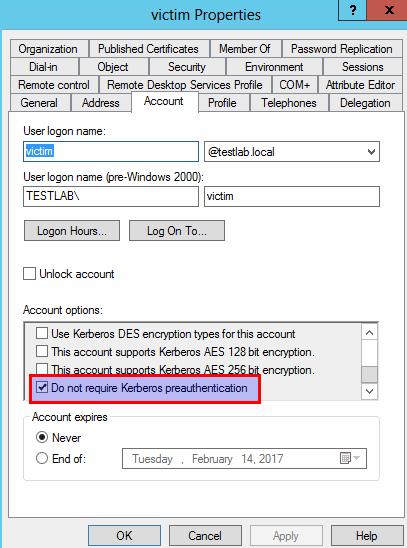

Under normal operations in a Windows Kerberos environment, when you initiate a TGT request for a given user (Kerberos AS-REQ, message type 10) you have to supply a timestamp encrypted with that user’s key/password. This structure is PA-ENC-TIMESTAMP and is embedded in PA-DATA (preauthorization data) of the AS-REQ – both of these structure are described in detail on page 60 of RFC4120 and were introduced in Kerberos Version 5. The KDC then decrypts the timestamp to verify if the subject making the AS-REQ really is that user, and then returns the AS-REP and continues with normal authentication procedures.
Note: the KDC does increase the badpwdcount attribute for any incorrect PA-ENC-TIMESTAMP attempts, so we can’t use this as a method to online brute-force account passwords :(
The reason for Kerberos preauthentication is to prevent offline password guessing. While the AS-REP ticket itself is encrypted with the service key (in this case the krbtgt hash) the AS-REP “encrypted part” is signed with the client key, i.e. the key of the user we send an AS-REQ for. If preauthentication isn’t enabled, an attacker can send an AS-REQ for any user that doesn’t have preauth required and receive a bit of encrypted material back that can be cracked offline to reveal the target user’s password.
This is something that has been known for a long time, after all, it’s the reason preauth was implemented in Kerberos! In modern Windows environments, all user accounts require Kerberos preauthentication, but interestingly enough, by default Windows attempts the AS-REQ/AS-REP exchange without preauthentication first, falling back to supplying the encrypted timestamp on the second submission.
[Edit] @munmap pointed out on Twitter that this behavior is due to the client not knowing the supported ETYPES ahead of time, something explicitly detailed in section 2.2 of RFC6113.
Windows offers a way to manually disable this protection for specific accounts through a useraccountcontrol modification

Attacks on users without Kerberos preauthentication can be found in the ASEPRoasting Weak TGTs secion